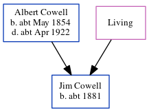

Jim Cowell c1881 -
[ Home ] | [ Calendar ] | [ Surnames Index ] | [ Census Index ] | [ Family History ]The child of Albert Cowell (an agricultural laborer) and Ellen Young, Jim Cowell, the second cousin twice-removed on the mother's side of Nigel Horne, was born in Kent, England c. 18811. On Apr 5, 1891, he was living at Clements Row, Wingham, Kent1.
Parents
- Albert was born c. May 1854
- Ellen
Citations
- 1891 England, Wales & Scotland Census - Findmypast (was age 10 and the son of the head of the household)
Media
1891 England, Wales & Scotland Census - GBC/1891/0005927287
Family Tree
Generated by ged2site. Last updated on Jun 11, 2024